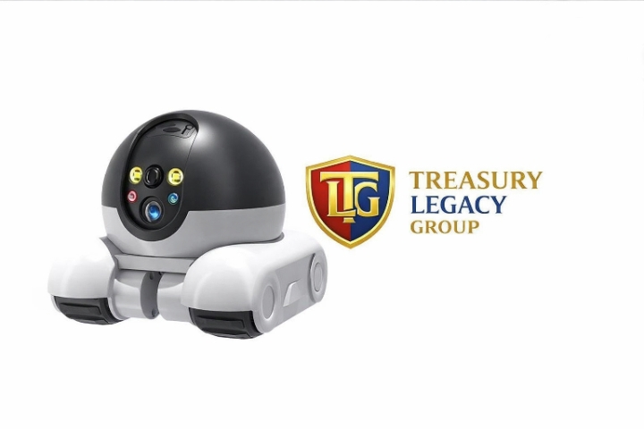

TLG Ankle Biter Setup Guide
Turn Any Old Phone into a Mobile Security Bot
Order TLG Ankle BiterWhat's in the Box
- Tank Chassis
- Phone Clamp
- Charging Cable
- Quick-Start Card
Prepare Your Old Phone
- Charge phone to 50%
- Optional factory reset
- Install Alfred Camera or AtHome Camera or Manything
- Connect to Wi-Fi
Mount the Phone
- Attach clamp to chassis
- Insert phone securely
- Camera faces forward
- Tilt slightly downward
Power On and Connect
- Turn on chassis
- Scan QR code on Quick-Start Card
- Download control app
- Connect chassis to Wi-Fi
- Confirm movement control
Activate Security Features
- Open camera app on old phone
- Enable motion detection
- Enable person detection if available
- Enable notifications
- Enable two-way audio
- Sign in with email for remote access
Test and Patrol
- Open camera app on main phone
- Confirm live video feed
- Use control app to drive bot
- Test two-way audio
- Begin patrol mode
- Monitor alerts and video remotely
Optional Upgrades
- Add power bank
- Add LED light
- Add Bluetooth speaker
- Add 3D-printed armor shell
Troubleshooting
- Bot not moving — charge chassis, reconnect app
- Camera not streaming — reopen app, check Wi-Fi, restart phone
- Lag or delay — lower video quality, move closer to router
Safety Notes and Final Setup Confirmation
- Indoor use only
- Keep away from water and heat
- Do not leave charging unattended
- Not for children under 12
Final Setup Checklist
- Phone mounted and charged
- Chassis powered and connected
- Camera app streaming video
- Motion detection enabled
- Remote control working
You're ready to patrol
TLG ANKLE BITER™ — INSTRUCTION MANUAL
Step 1: Unbox Your Kit
Open the box and confirm all parts are included:
- Tank Chassis (robot base)
- Phone Clamp (holds your old phone)
- Charging Cable (USB)
- Quick-Start Card (reference sheet)
Step 2: Charge the Chassis
Plug the charging cable into the chassis.
Wait until the green light appears — this confirms full charge.
Do not operate until fully charged.
Step 3: Prep Your Old Phone
Use any old smartphone (iPhone preferred for best app control).
Install the following apps:
- AtHome Camera (for live view, alerts, motion detection)
- Chassis App (for driving, patrol, laser control)
Connect the phone to Wi-Fi or 4G.
Charge the phone to 100%.
Turn off auto-lock and screen timeout.
Step 4: Mount the Phone
Attach the phone clamp to the chassis.
Insert the phone securely.
Make sure the camera lens faces forward.
Adjust angle to match robot’s head tilt.
Step 5: Connect & Activate
Open the Chassis App to control movement.
Use joystick or patrol mode.
Open AtHome Camera to view live feed, enable alerts, and record.
Test motion detection and night vision.
Step 6: Laser Pointer Setup
In Chassis App, activate Laser Mode.
Laser will emit from the robot’s front sensor.
Use laser to:
- Entertain cats and dogs (chase mode)
- Signal dogs toward doors or windows (alert mode)
- Distract or engage children
- Trigger barking response from trained dogs
Point laser at door, window, or object — dog will react to the dot.
Step 7: Patrol Mode
Enable autonomous patrol in Chassis App.
Robot will move in preset patterns.
Motion detection will trigger alerts.
Use app to adjust patrol zones and speed.
Step 8: Emergency Alerts
Enable notifications in AtHome Camera.
Set motion zones and sensitivity.
If robot detects movement, it will send alert to your phone.
Optional: connect to smart home system or emergency contact app.
Step 9: Maintenance
Charge chassis every 2–3 days.
Clean wheels and sensors weekly.
Update apps monthly.
Replace phone if battery degrades.
Step 10: Donation Info
Treasury Legacy Group donates 5% of every sale to charity.
Your purchase supports robotics education and community safety.
FOR PARENTS
The TLG Ankle Biter™ is designed as a safe, simple, entry‑level robotics device for families. It uses an old smartphone as its “brain,” connects to your home Wi‑Fi, and allows you to monitor rooms, pets, and children from another device. The robot cannot cause physical harm, cannot move fast enough to injure anyone, and cannot interact with people beyond basic movement and a low‑power laser pointer. It is intentionally limited for safety.
The robot includes a built‑in red laser pointer that can be used for pet play, cat chase games, or dog training. The laser is low‑power and safe when used responsibly. Parents should supervise younger children when using the laser to ensure it is not pointed directly into eyes. The robot cannot fire, project, or emit anything harmful. It is a signaling and entertainment tool only.
The robot uses your old phone for video and audio. All video stays on your device or inside the apps you choose to install. 420 Robotics does not collect or store any footage. Parents who already use smartphones, tablets, laptops, or smart doorbells are already familiar with the same privacy considerations. The robot does not add new risks beyond what you already carry in your pocket.
The robot can follow pets or children using motion tracking. This feature is optional and can be turned off. It is designed to help parents keep an eye on kids in another room, monitor pets while away, or check on activity without needing to physically enter the room. The robot cannot open doors, climb stairs, or leave the floor it is placed on.
Parents can use the robot to teach children about robotics, AI, and safe technology use. The device is intentionally simple so kids can learn without danger. It is a hands‑on way to introduce the next generation to the computer‑robotics age in a controlled, supervised environment.
The robot is not a replacement for parental supervision, emergency services, or professional security systems. It is a learning tool, a mobile camera, and a pet‑interaction device. Parents should use it as an aid, not a substitute.
If the robot breaks due to normal use, 420 Robotics will help repair or replace it. If it is damaged due to misuse, water, drops, or being run over, replacement parts may be required. We do not support intentional destruction for entertainment or online videos.
By using the TLG Ankle Biter™, parents agree to operate the robot safely, supervise children when necessary, and understand the limitations of AI systems. The goal is to provide a safe, educational, and fun introduction to robotics for families.
FOR FIRST‑TIME AI USERS
The TLG Ankle Biter™ is designed for people who have never used AI, robotics, or smart devices before. It uses simple apps, clear controls, and a safe, limited AI system so beginners can learn without risk. The robot does not make decisions on its own beyond basic movement, motion alerts, and optional pet‑tracking. You stay in control at all times through your phone, laptop, or tablet.
The robot uses an old smartphone as its processor. This means the AI is not running on your personal phone unless you choose to install it. The robot connects to your home Wi‑Fi the same way a laptop or smart TV does. If you already use a smartphone, a doorbell camera, or a computer, you already understand the same privacy level. The robot does not add new risks beyond what you already use every day.
The apps required are simple: one app shows the camera feed and alerts, and the other app drives the robot. You can learn both in minutes. The robot moves slowly, cannot harm anyone, and cannot perform complex actions. It is intentionally designed to be safe for beginners, children, and pets.
The robot includes a built‑in red laser pointer. This feature is optional and can be used for pet entertainment or basic training. The laser is low‑power and safe when used responsibly. First‑time users can practice moving the robot, turning the laser on and off, and learning how pets respond. The robot cannot fire anything, cannot shock, cannot spray, and cannot cause physical damage.
AI features include motion detection, night vision, and optional pet or child following. These features help users understand how AI “sees” movement and responds to simple patterns. The robot does not make independent choices and cannot override user commands. It is a learning tool, not an autonomous system.
The robot is ideal for people who want to understand AI without bias, fear, or misinformation. It provides a safe environment to explore how AI works, how robotics respond to commands, and how sensors detect movement. It is also a way to test different AI models without exposing your personal phone or data. The robot uses an extra device, not your main one, which keeps your personal information separate.
If something goes wrong, 420 Robotics will help fix it. If the issue is software, we assist with updates and troubleshooting. If the robot is damaged physically, we help with replacement parts when available. The goal is to support new users, teach them how AI works, and make robotics accessible to everyone.
By using the TLG Ankle Biter™, first‑time AI users agree to operate the robot safely, follow instructions, and understand that the device is a beginner‑level learning tool. It is designed to introduce people to the computer‑robotics age in a safe, controlled, and educational way.
420 ROBOTICS — AI USE POLICY, WARRANTY, SAFETY NOTICE, AND CUSTOMER AGREEMENT
420 Robotics uses multiple AI systems to power, support, and improve the TLG Ankle Biter™ and other robotics products. These systems include Claude, Microsoft Copilot, GPT‑5, Gemini, Grok, and Meta AI. All AIs used are on free plans unless a paid plan is recommended for advanced features. Customers are not required to purchase any AI subscription to use the robot. Paid plans may improve performance, but they are optional.
420 Robotics uses multiple AIs because no single model is perfect. Each model has strengths and weaknesses. By combining them, we reduce bias, increase accuracy, and create a safer learning environment for new users. This is the first time large language models are being used in consumer robotics for the average person, and our goal is to make the experience simple, safe, and educational.
The TLG Ankle Biter™ is designed as an entry‑level AI robotics device. It teaches users how AI works, how robotics respond to commands, and how to safely interact with mobile AI systems. It is intentionally limited in power to prevent harm. The only real risk is privacy, which is the same risk you already have with your phone, laptop, smart TV, Ring doorbell, or any device with a camera or microphone. The robot uses an old phone or extra device, not your main phone, and connects to your home Wi‑Fi. No AI model runs directly on your personal phone unless you choose to install it.
420 Robotics does not collect personal data from your robot. All video, audio, and sensor data stays on your device or inside the apps you choose to install. You are responsible for your own privacy settings. If you already carry a phone with 3–6 cameras, you already have more exposure than this robot creates.

The robot includes a built‑in red laser pointer. This laser is low‑power and safe for pets and children when used responsibly. It can be used for pet entertainment, cat chase games, dog training, or directing a dog toward a door or window during a potential threat. The robot cannot physically harm anyone. It cannot attack, restrain, or chase a person. It is a signaling and monitoring tool only.
420 Robotics provides a limited warranty. If the robot malfunctions due to manufacturing defects, software issues, or AI errors, we will repair or replace it. If the robot is damaged due to misuse, neglect, water damage, being stepped on, being thrown, or being run over by a car, the customer is responsible for replacement parts. If we have spare parts available, we will send them at no cost. If we do not have spare parts, the customer must purchase replacements. We do not support intentional destruction for entertainment or online videos.
420 Robotics encourages learning and participation. Customers who show interest in robotics, AI, or troubleshooting may be invited to assist with testing, feedback, or community support. This is optional. Customers who do not want AI involvement can use the robot offline or with non‑AI modes. The robot can operate without AI using manual control and basic camera functions.
420 Robotics is not responsible for injuries caused by pets reacting to the laser pointer. Customers must use the laser responsibly. The robot is not a replacement for home security systems, emergency services, or professional monitoring. It is a learning tool, a pet interaction device, and a basic mobile camera platform.
By using the TLG Ankle Biter™, customers agree to operate the robot safely, maintain their own privacy settings, and understand the limitations of AI systems. 420 Robotics and Treasury Legacy Group are not liable for misuse, unsafe operation, or damage caused by ignoring instructions. All AI systems used are third‑party services with their own terms and policies. Customers are responsible for reviewing those policies.
420 Robotics provides support for setup, troubleshooting, and repairs. If a robot breaks due to normal use, we will help fix it. If it is destroyed beyond repair, we will assist with replacement options. Our mission is to help people learn robotics safely, understand AI without fear, and bring the next generation into the computer‑robotics age with confidence.
Order TLG Ankle Biter